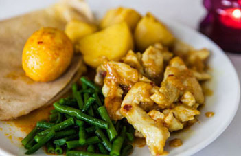

Surinaamse roti

Roti is een Hindoestaans gerecht dat ook bij Nederlanders bekent is als een dunne pannenkoek met een vulling van aardappelen of gele spliterwten. Zelf maak ik roti`s met aardappelvulling.
Ingredienten: 500 gr zelfrijzend bakmeel 2½ dl warm water of lauwe melk 1 el olie of stukje boter zout en 1 thee bakpoeder 220 gr gele erwten of aardappelen 1 el. komijn
gesmolten olie en boter om te smeren op de roti Vulling
Bereiding: Kook 200 gr. gele erwten met een beetjes zout en weinig water. Als de erwten gaar zijn afgieten en de erwten malen en opbakken met een el komijn.af laten koelen Aardappel vulling Kook de aardappelen en schil ze warm en prak ze met een vork als het nog warm is. Doe een el komijn erdoor en laat het afkoelen. Maak een deeg van het meel, bakpoeder, zout en water/ melk. laat 30 minuten rijzen, dan goed doorkneden en vorm hiervan bollen die je 5 minuten laat staan. Vul de deeg bollen ddoor de vulling in een holte van het deeg te duwen en goed te omhullen met het deeg en rol ze uit tot een middel grote pannenkoek. Leg een roti in de pan keer het om dan smeren met de olie en boter.daarna weer keren en andere kant insmeren. als de roti bolt is de roti klaar.